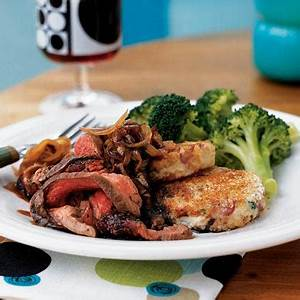

Flank Steak with Caramelized Onions and Balsamic Glaze
The reduced balsamic vinegar sauce gives the flank steak a unique flavor that pairs perfectly with the caramelized onions. Both the steak and onions contribute a hefty dose of potassium to this entrée--766 milligrams in each serving. Serve with steamed broccoli or asparagus, and drizzle some of the glaze over the vegetable.

Quick Facts
- Time: 45mins (25mins cooking time)
- Serving size: 4 Servings
- serving size: about 3 ounces steak, about 1/4 cup onions, and about 1 tablespoon balsamic glaze
Ingredients
- ⅔ cup balsamic vinegar
- 1 tablespoon olive oil
- 6 cups vertically sliced onion (about 1 1/2 pounds)
- ½ teaspoon salt, divided
- 1 (1-pound) flank steak, trimmed
- ¼ teaspoon freshly ground black pepper
- ¼ teaspoon dried thyme
- Cooking spray
Directions
- Bring balsamic vinegar to a boil in a small, heavy saucepan. Reduce heat to medium; cook until reduced to 1/4 cup (about 5 minutes). Remove from heat.
- Heat oil in a large nonstick skillet over medium-high heat. Add onion, and sauté 10 minutes or until tender. Sprinkle with 1/4 teaspoon salt; sauté 18 minutes or until onions are golden brown. Remove from heat.
- Preheat oven.
- Sprinkle steak with remaining 1/4 teaspoon salt, pepper, and thyme. Place steak on a broiler pan coated with cooking spray; broil 6 minutes on each side or until desired degree of doneness. Cutsteak diagonally across grain into thin slices. Serve steak over onions; drizzle with balsamic glaze.
- Steak and caramelized onions are fabulous partners for numerous red wines. But the balsamic vinegar glaze presents a bit of a challenge since vinegar can make wine taste sharp. One variety stands up especially well to vinegar: syrah (also known as shiraz). There are many great syrah/shirazes available.
Nutritional Facts
Per Serving: 317 calories; calories from fat 28%; fat 9.9g; saturated fat 2.8g; mono fat 4.8g; poly fat 0.7g; protein 26.9g; carbohydrates 30.6g; fiber 3.4g; cholesterol 37mg; iron 2.7mg; sodium 375mg; calcium 95mg.